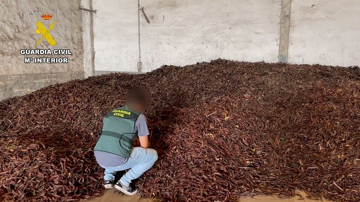
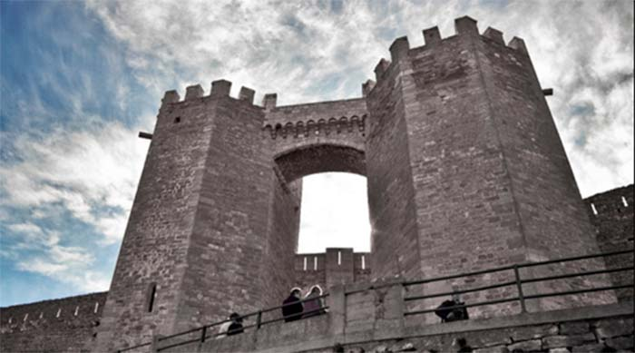
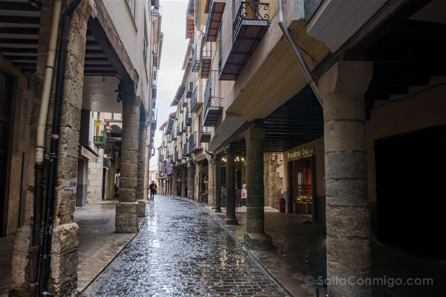
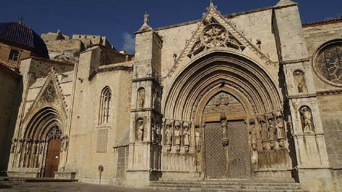

Historia
Morella fue conquistada por los cristianos en octubre de 1231, aunque es el 7 de enero de 1232 cuando el rey Jaime I entró triunfante en la ciudad tras duras negociaciones con el noble aragonés Blasco de Alagón, quien tenía la promesa del rey de quedarse con todo lo conquistado.
Lugares para visitar
1. El Castillo
El castillo de Morella, construido en lo alto de la población sobre la "Mola" aprovechando la roca, es una fortificación del siglo XIII de arquitectura islámica con reformas posteriores de arquitectura medieval.
2. Convento de San Francisco.
Este convento gótico marca el acceso al castillo. Junto a otras edificaciones históricas anexas se convertirá en el Parador Nacional de Turismo de Morella. La Iglesia del convento, del siglo XIV, muestra la belleza y sencillez del gótico original, como los restos del claustro.
3. Torres de San Miguel
Las Torres de San Miguel son el acceso principal a la ciudad de Morella. Torres gemelas, de base octogonal construidas en el s. XIV, forman parte destacada de la estructura amurallada que rodea la población.
Noticias

03/10/2022
ARRESTADOS DE 32 Y 39 AÑOS, LLEGARON A ENTRAR EN LOS DORMITORIOS PARA ROBAR DINERO Y OBJETOS DE VALOR.
La Guardia Civil de Vinarós ha detenido a dos hombres de 39 y 32 años de edad, ambos de nacionalidad albanesa, por la comisión de varios robos en vivienda de poblaciones del Baix Maestrat.

19/12/2022
15 DETENIDOS Y 4 INVESTIGADOS EN MORELLA EN UNA OPERACIÓN CONTRA EL ROBO DE ALGARROBA
La Guardia Civil ha detenido durante la campaña de la recogida de la algarroba entre los meses de septiembre, octubre y noviembre, a 15 personas e investigado a otras 4, como supuestos autores de un delito de receptación de 145 toneladas de algarroba.
02/02/2023
ROBAN EN MORELLA VIBRADORES DE ORO DE UN VALOR DE 80.000 EUROS EN LA MAYOR DISTRIBUIDORA DE JUGUETES EROTICOS DE ESPAÑA.
Las cámaras de seguridad captaron a tres personas con los rostros cubiertos, aunque no se descarta que contarán con la ayuda de alguna persona más.
Mapa de Morella
Galeria de imágenes
  